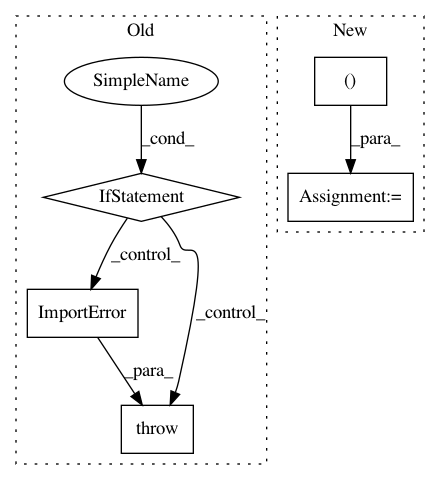

3d53143678cf70ed79772f1b6e384fa33abb55cf,nilearn/__init__.py,,_check_dependencies,#,15
Before Change
except ImportError:
raise ImportError("Scikit-learn could not be found,"
" please install it properly to use nilearn.")
if not LooseVersion(sklearn.__version__) >= LooseVersion("0.10"):
raise ImportError(
"A scikit-learn version of at least 0.10 is required"
" to use nilearn. %s was found. Please upgrade scikit-learn."
% sklearn.__version__)
try:
import nibabel
except ImportError:
raise ImportError("nibabel could not be found,"
After Change
def _check_dependencies():
_required_module_versions = [("numpy", "1.6.0"),
("scipy", "0.9.0"),
("sklearn", "0.10"),
("nibabel", "1.1.0")]
for module_name, minimum_version in _required_module_versions:
_import_module_with_version_check(module_name, minimum_version)
In pattern: SUPERPATTERN
Frequency: 3
Non-data size: 5
Instances
Project Name: nilearn/nilearn
Commit Name: 3d53143678cf70ed79772f1b6e384fa33abb55cf
Time: 2014-07-16
Author: loic.esteve@ymail.com
File Name: nilearn/__init__.py
Class Name:
Method Name: _check_dependencies
Project Name: ray-project/ray
Commit Name: 7b27ce2b236e29d82e33c5e07645f845d433973c
Time: 2020-03-27
Author: maximsmol@gmail.com
File Name: python/ray/util/sgd/torch/torch_runner.py
Class Name: TorchRunner
Method Name: __init__
Project Name: keras-team/keras-preprocessing
Commit Name: 75c9e8cbcd9da21591cd5f8aaaa99205f48fa606
Time: 2021-01-19
Author: eli.osherovich@gmail.com
File Name: keras_preprocessing/image/image_data_generator.py
Class Name: ImageDataGenerator
Method Name: fit